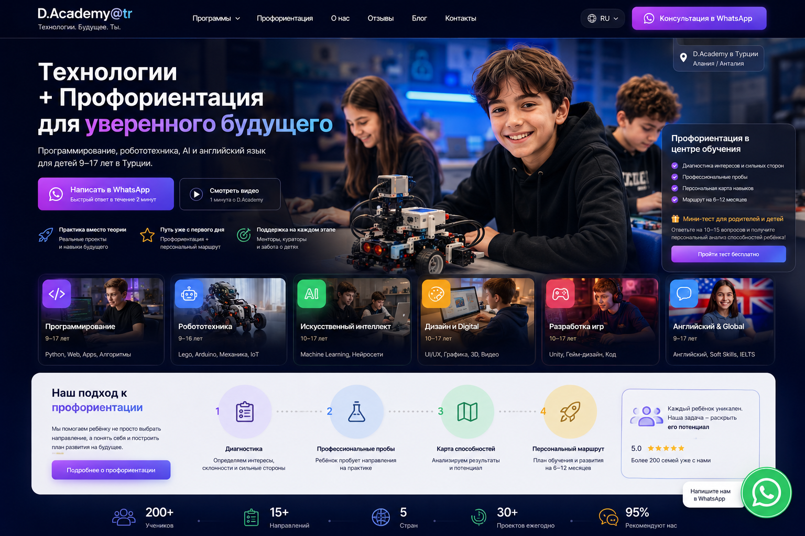

Программирование
Python, Web, Apps, алгоритмы
9–17 ЛЕТРебёнок не просто изучает технологии — он пробует роли, создаёт проекты и понимает, где его сильные стороны.

Python, Web, Apps, алгоритмы
9–17 ЛЕТAI-инструменты, автоматизация, проекты
10–17 ЛЕТМеханика, электроника, Arduino, IoT
9–16 ЛЕТUX/UI, графика, видео, digital
10–17 ЛЕТИгровые механики, Unity, код
10–17 ЛЕТАнглийский, soft skills, global track
9–17 ЛЕТИнтересы, стиль мышления и мотивация.
Реальные мини-задачи из разных сфер.
Сочетание интереса и способностей.
Направления для дальнейших проб и развития.
15 вопросов для родителя. Результат сразу покажет ведущие интересы ребёнка и направления, которые стоит попробовать.
Это ориентировочный профориентационный скрининг, а не психологическая диагностика и не окончательный выбор профессии.